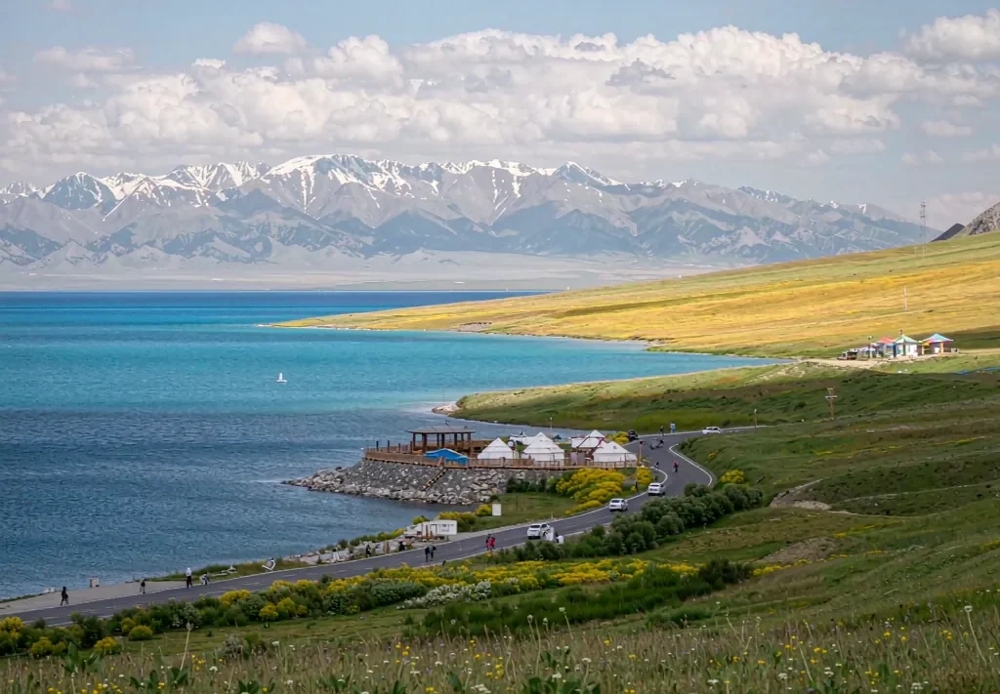

Flowers · Grassland · Lakes
10 days
Ili Valley Private Journey
Sayram Lake, Nalati and Kalajun, moving east through the richest season the Ili Valley has to offer.
Customise this route →
Signature journeys
North or south, four days or fifteen — pick the one closest to what you imagine, then let us adjust it to your season, dates and pace.
Most requested
If you are starting from scratch, begin here.

Flowers · Grassland · LakesSayram Lake, Nalati and Kalajun, moving east through the richest season the Ili Valley has to offer.
Customise this route → Kanas · Hemu · Pamir
Kanas · Hemu · PamirKanas light, morning mist at Hemu and the snow peaks of the Pamirs in a single unhurried journey.
Customise this route → Tianshan · Gorges · Snowline
Tianshan · Gorges · SnowlineChina's most spectacular seasonal road: from grassland to snowline, with four seasons in a single day.
Customise this route →All 9 journeys
Every route can be shortened or extended, with sights swapped and accommodation upgraded. Two routes can also be joined into one trip.
West from Urumqi over the Guozigou Bridge to Sayram Lake, then deep into Nalati, Kalajun and Qiongkushitai for pasture and flower country.
Designed for the grassland season, with Huocheng lavender in June and July. Two great pastures and an old herding village, at a slower pace.
From Kashgar's old town up the Karakoram Highway to the Pamirs, where Muztagh Ata is reflected in Karakul Lake, then on toward the Taklamakan.
Golden birch forest, Hemu mist and Baihaba village in September, paired with Urho Ghost City and the Colorful Beach riverbank.
From Tianchi Lake across the Junggar Basin to Koktokay, then along the Irtysh River to Kanas — the northern highlights in one arc.
Four seasons in one day, ten different skies in ten miles. Gorges, high passes and Bayanbulak — the shortest and most concentrated route we run.
Old-town lanes, bazaars and craft workshops, extending to high-altitude lakes and Tajik villages. Best for culture and a slower rhythm.
The best answer to a short holiday: the Jiaohe ruins, Flaming Mountains, Grape Valley and Tianchi Lake show Xinjiang's contrasts in four days.
Northern landscapes and southern culture in a single journey. Ideal for a first visit when you want to see it all; stops can be paced to your energy.
Give us your dates and the landscapes you want to see. We will write a new route for you.
Get a free quote